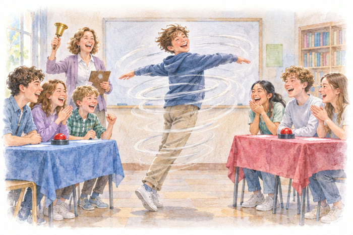

Listen to the text
Speed:

Our teacher loves surprises. Yesterday she came in with a bell and said, "Books closed. Two teams. Twenty questions about the English-speaking world. The losers will sing a song in English." Nobody wanted to sing, so we tried hard. "Which country is called a melting pot?" "The USA!" One point for us. "Which country has two official languages, English and French?" "Canada!" The other team was faster. "What is the capital of Australia?" "Sydney!" shouted Ostap. Wrong. "Canberra," said Yana quietly. One point for them. "Who were the first people of New Zealand?" "The Maori. They arrived in canoes." "What is the Union Jack?" "The flag of the United Kingdom." "Which country consists of four parts?" "The United Kingdom: England, Scotland, Wales and Northern Ireland." "What do Americans call a lift?" "An elevator." "Where can you see geysers and kiwi birds?" "In New Zealand." "Who lived in Australia for more than sixty thousand years before Europeans?" "Aboriginal people." "Which country is a monarchy: the USA or Canada?" We thought for a long time. "Canada!" Correct. "What is a tornado?" Vlad stood up and started spinning. The teacher gave him a point for acting. After nineteen questions the score was equal. The last question was, "In how many countries is English an official language?" We said twenty. They said forty. The answer is more than fifty. "Nobody wins," said the teacher. "So everybody sings." We sang "We Are the Champions". All twenty-six of us. It was loud, and it was not beautiful. But the teacher from the next classroom came in and joined us.
Tap any sentence to hear it again.
Сподобалось? На сайті ще більше матеріалів для вчителів!
Reader, презентації, ігри, діагностичні та контрольні роботи до підручників 1-11 класів.
Перейти на сайт materials.allaenglish.com